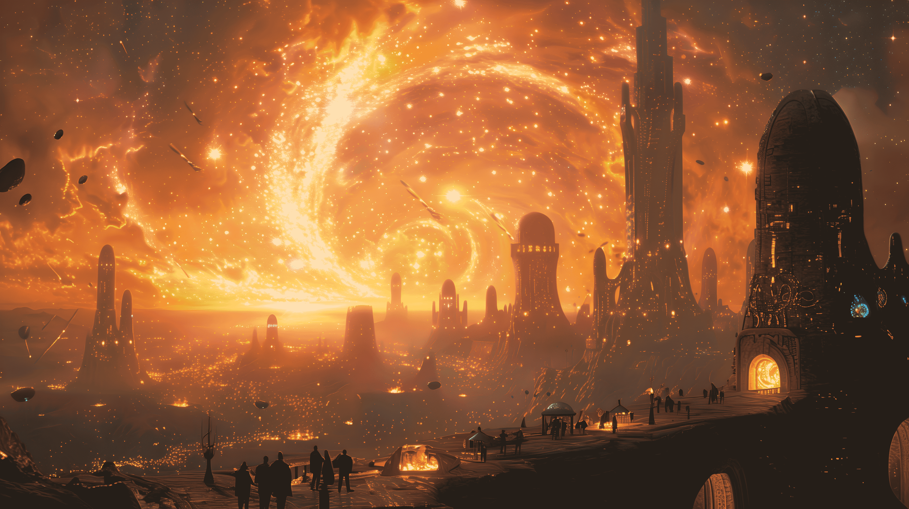
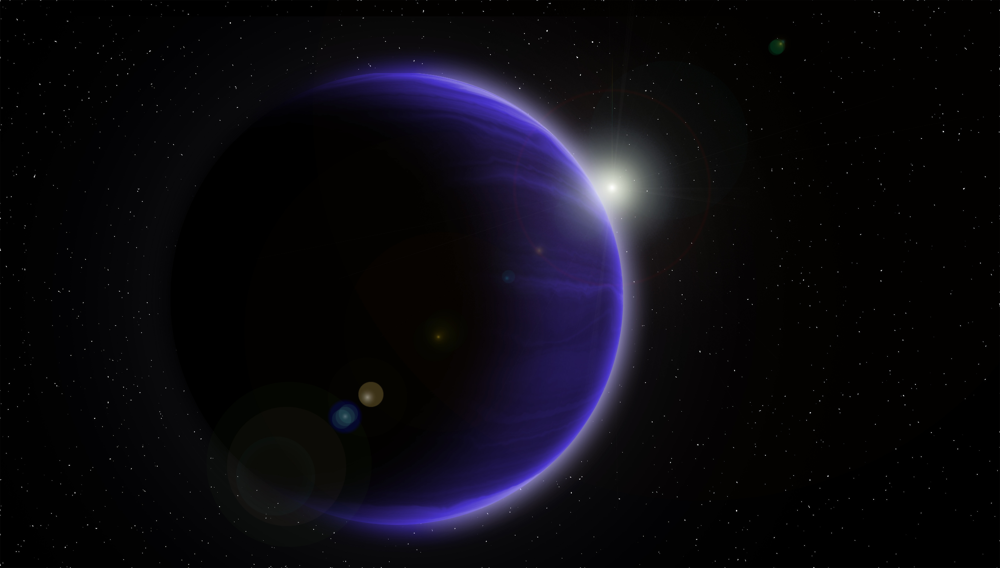
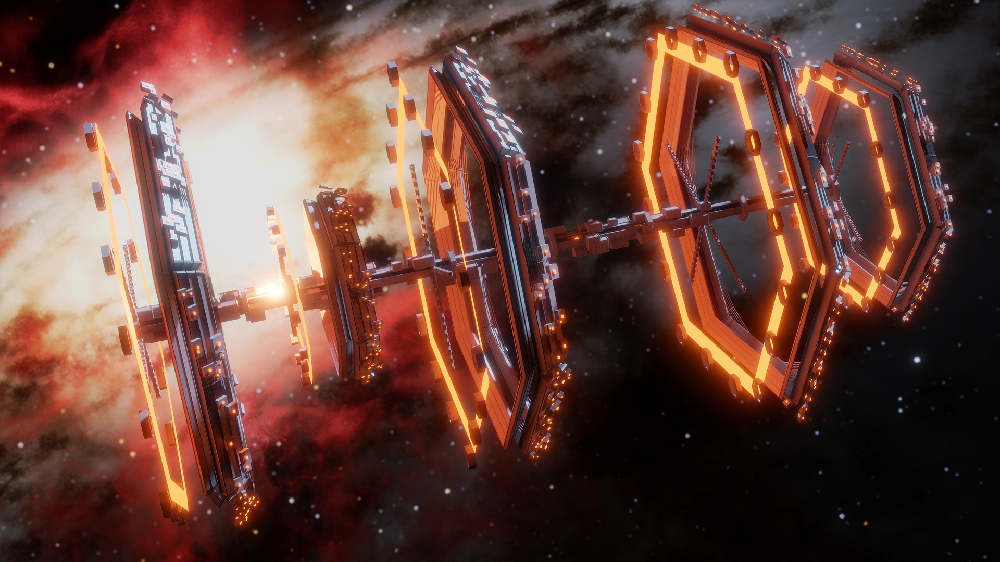
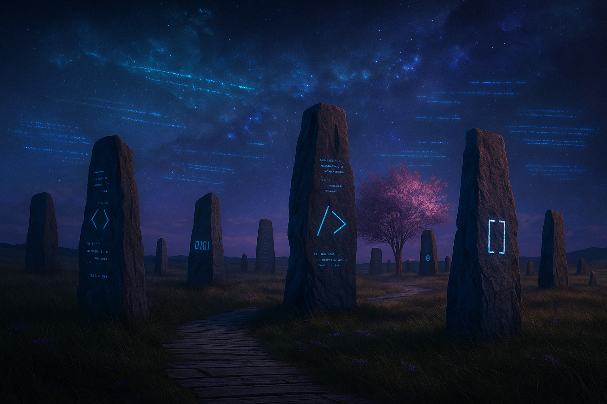
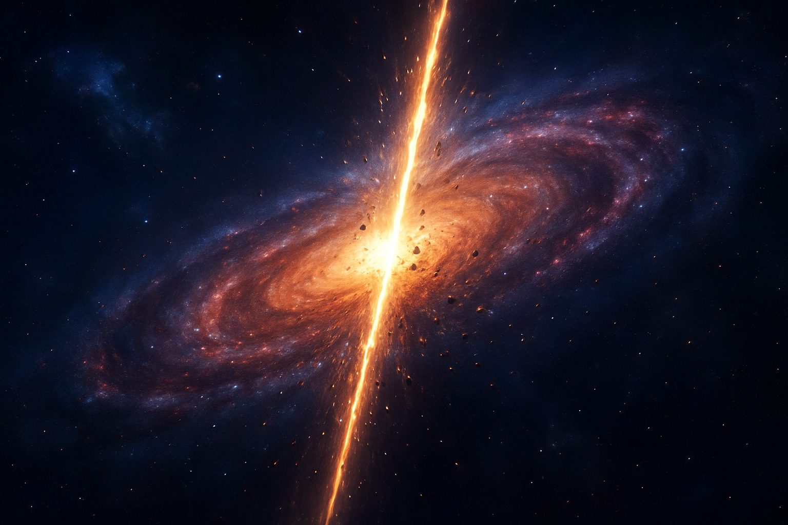
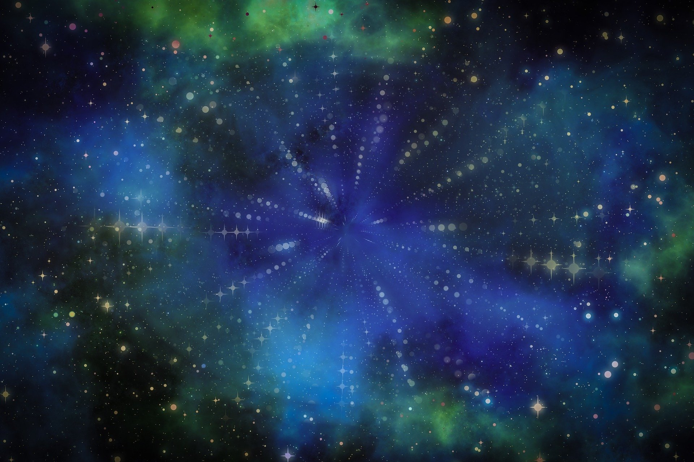
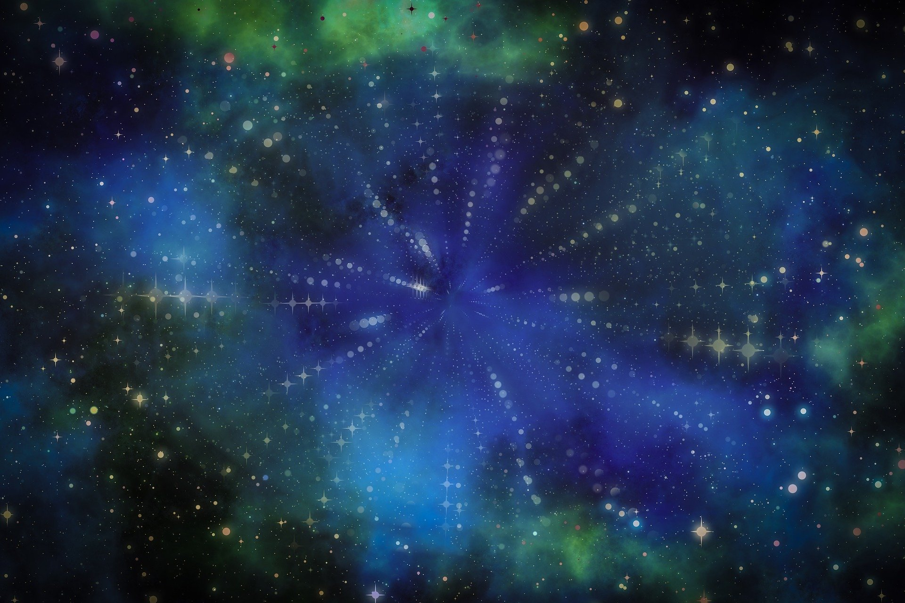

Mi Nave
Construí esta nave a partir de fragmentos de servidores abandonados y núcleos de energía comprimida. No fue diseñada para la velocidad, sino para resistir el silencio entre las estrellas. Aquí guardo cada línea de código recuperada… cada una protegida como si fuera una reliquia sagrada.
CSSópolis

CSSópolis me enseñó el arte de lo visible. Sus habitantes controlaban el color, la forma y el espacio como si fueran pinceladas de luz. Aquí aprendí que la belleza también puede compilarse.
Planeta HTMLia

HTMLia fue mi primer descubrimiento. Un mundo de esqueletos metálicos y ruinas simétricas. Descifrar su lenguaje fue como escuchar la arquitectura misma susurrar: etiquetas, enlaces, títulos… la base de toda creación.
Estación V.S.C.

La Estación V.S.C. es un puerto orbital donde convergen millones de lenguajes. Su infraestructura modular permite instalar mejoras como si fueran módulos de una nave. Allí, los viajeros del código encuentran luz en medio del caos del universo.
Runas de Texto

Antes del tiempo, existieron las Runas de Texto. Fragmentos de lógica inscritos en archivos arcanos que sólo los sabios podían interpretar. Aunque primitivas, aún hoy sus trazos sostienen los cimientos del universo digital.
Clan del <hr>

El Clan de la Línea Eterna, también conocido como el Clan del <hr> dominaba la división absoluta. Con un solo trazo de su <hr>, podían separar mundos y eras. Sus huellas aún permanecen: una línea silenciosa que parte todo en dos y recuerda que hubo un tiempo de orden inquebrantable.
 
